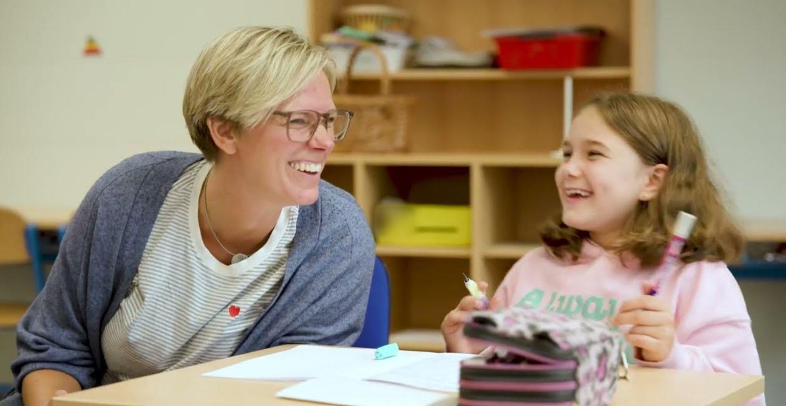
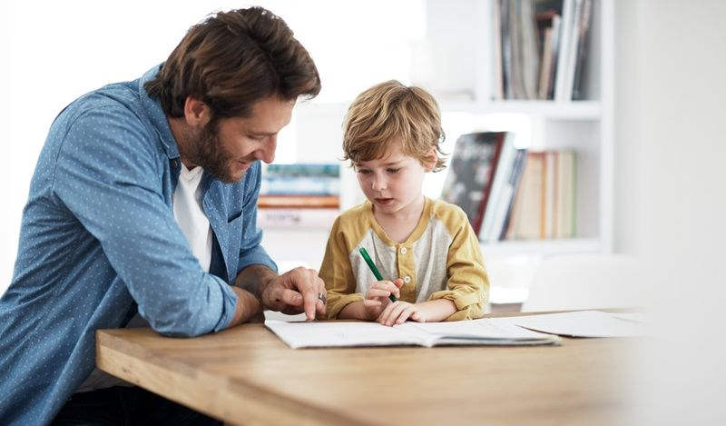
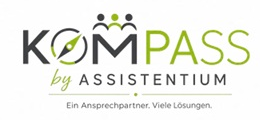
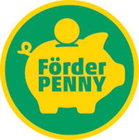

Tannenbaumaktion 2026
Mit 50 € schenken Sie fünf Kindern aus der Schulbegleitung ein Weihnachtsgeschenk.

Standbild aus dem ImagefilmWir begleiten Kinder in der Schule, Familien in schwierigen Zeiten und Menschen in ihrem Alltag. Aus Wedel, im ganzen Kreis Pinneberg.
Imagefilm ansehenWir begleiten Kinder und Jugendliche, die ihren Schulalltag noch nicht allein bewältigen können. Individuell, bedarfsgerecht und mit dem Ziel, dass sie so selbstständig wie möglich lernen, bis hin zum Schulabschluss.
Mehr zur Schulbegleitung
Sozialpädagogische Familienhilfe und Erziehungsbeistandschaft für Familien und junge Menschen in Krisensituationen.
Betreuung, stundenweise Entlastung für pflegende Angehörige und Hilfe im Haushalt.
Ein fester Ansprechpartner im Quartier, der Bewohner, Hausverwaltung und Hilfesysteme zusammenbringt.
Malen, gestalten, schreiben: in kleinen Gruppen, ohne Vorgaben und ohne Bewertung.
Weil Schule mehr ist als Lesen, Schreiben und Rechnen. Und weil Inklusion nur gelingt, wenn Menschen mit Unterstützungsbedarf die individuelle Hilfe bekommen, die sie sich wünschen und brauchen.
ASSISTENTIUM ist eine gemeinnützige GmbH aus Wedel. Unser Team begleitet Kinder, Jugendliche, Familien und Erwachsene im Kreis Pinneberg.
Unser TeamDie wirksamste Begleitung, Unterstützung und Förderung für jeden Menschen in seinen individuellen Bedarfssituationen, mit dem Ziel ihm ein möglichst unabhängiges, selbstwirksames Leben zu ermöglichen und dabei auf Augenhöhe mit allen Akteuren zuverlässig, lösungsorientiert und wertschätzend zu handeln.

Orientierung · Begleitung · Vernetzung · Prävention
Wohnraum allein reicht nicht. Menschen brauchen Sicherheit, Hilfe und eine feste Bezugsperson: zu Hause, im Stadtteil und im Alltag. KOMPASS setzt genau dort an, wo Unterstützung beginnt.

Ob mit Ausbildung oder als Quereinsteiger*in: Mit unserem eigenen Schulungsprogramm bereiten wir dich auf deine Aufgabe vor, mit Themen wie Kinderschutz, Autismus, AD(H)S, Kommunikation und Erste Hilfe.
Wedel · Elmshorn · Uetersen · Pinneberg · Moorrege · Appen und weitere Orte im Kreis Pinneberg
Mit 50 € schenken Sie fünf Kindern aus der Schulbegleitung ein Weihnachtsgeschenk.
Unser neues Angebot für Bewohner und Wohnungsunternehmen.

Eine Empowerment-Gruppe für Mädchen mit Trisomie 21. Unterstützen Sie das Projekt über betterplace.
Als gemeinnützige GmbH finanzieren wir Projekte wie die Mädchengruppe oder die Tannenbaumaktion über Spenden.

FörderpennyAn der PENNY-Kasse aufrunden oder in der App aktivieren